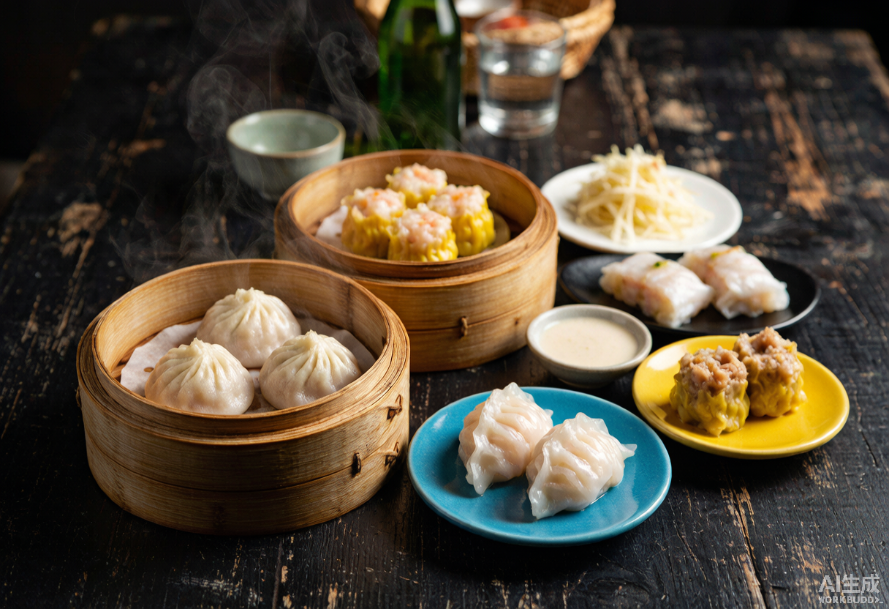

Culinary Journey
风味美食 · Beijing — Chengdu — Guangzhou
China has eight great culinary traditions — this journey dives deep into three. From Peking duck to Sichuan hotpot to Cantonese dim sum, you…
Overview
Culinary Journey
China has eight great culinary traditions — this journey dives deep into three. From Peking duck to Sichuan hotpot to Cantonese dim sum, you'll eat your way across 2,000 km of the most diverse food culture on Earth.
Best for: Foodies, couples, and curious eaters who believe a country is best understood through its flavors.
From $1,890 / person
Customize This Journey →
Day by Day
Your journey, unfolding
Day 1–2
Beijing — Imperial Cuisine
- Arrival and welcome Peking duck dinner
- Dawn wet-market visit with a local chef
- Forbidden City morning tour
- Hutong home-cooked dinner with a local family
Day 3–5
Chengdu — The Fire of Sichuan
- Flight to Chengdu
- Dawn wet-market visit with a Chengdu chef
- Sichuan hotpot and mapo tofu cooking class
- Panda Base at 8 AM feeding time
- Bamboo-grove teahouse afternoon
Day 6–7
Guangzhou — Cantonese Perfection
- Flight to Guangzhou
- Dim sum breakfast in the old town
- Wonton noodle and roast goose trail
- Pearl River cruise with dinner
Day 8
Departure
- Morning visit to a traditional herbal market
- Farewell Cantonese seafood lunch
- Private transfer to airport
What's Included
- Private English-speaking guide in each city
- All domestic flights and transfers
- 7 nights hand-picked 4–5 star hotels
- Daily breakfast, 8 included meals
- All entrance fees
- 24/7 on-trip support hotline
Not Included
- International flights
- Chinese visa fees
- Personal travel insurance
- Drinks and meals not listed
- Tips and personal expenses
Make this journey yours
This itinerary is a starting point. Tell us your dates, pace, and passions — we'll reshape it around you.